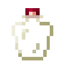

Надійна колба для зілля
Надійна колба для зілля — це предмет, який може зберігати кілька порцій одного зілля. Можна знайти як рідкісну здобич у Вежі Ліча.
- Міцність: нескінченна
- Відновлюваний: ні
- Складається: ні
- ID: twilightforest:greater_potion_flask

Її можна наповнити, натиснувши на неї правою кнопкою миші зіллям. Після наповнення Надійну колбу можна наповнювати лише додатковими порціями того самого зілля. На відміну від Крихкої колби для зілля, Надійна колба не розбивається після випивання всього запасу зілля. Вона не має міцності та може використовуватися багато разів.